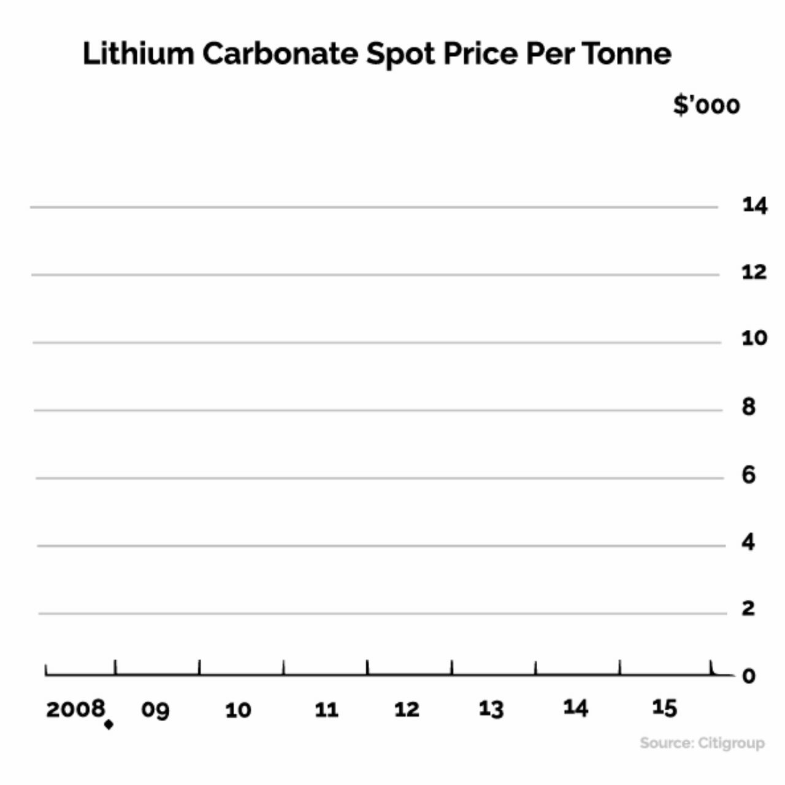
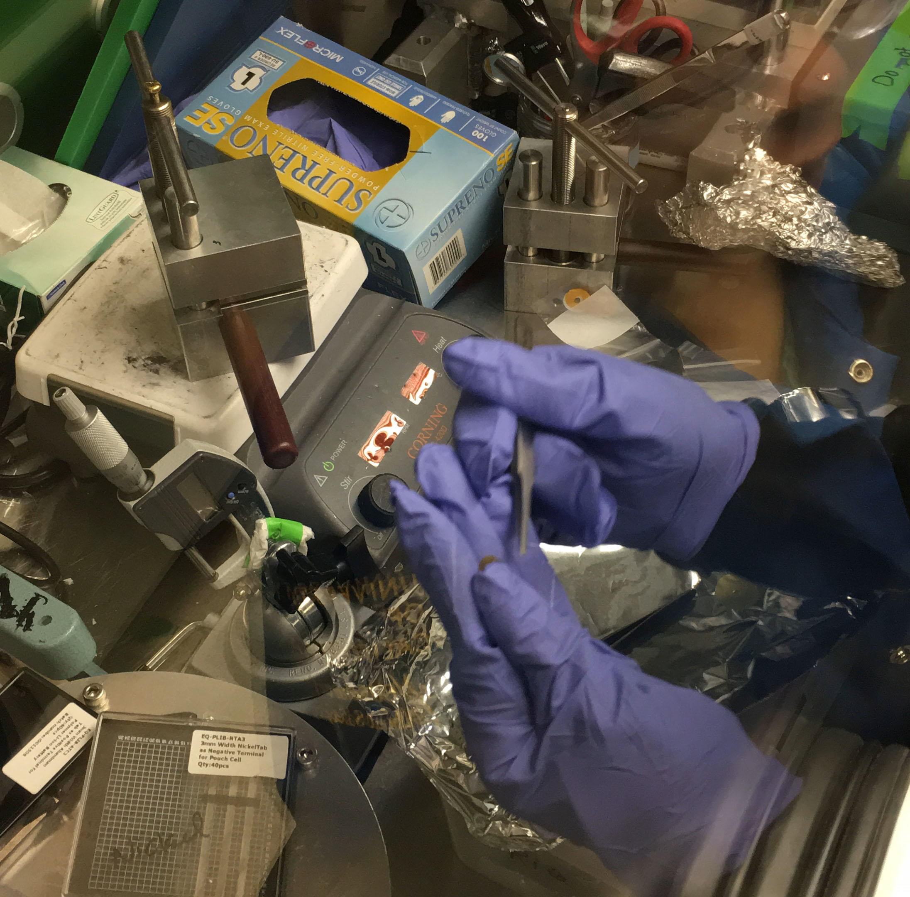

It is clear that the world is shifting from fossil fuel to batteries as industry responds to advances in technology and mounting environmental concerns about the use of oil and coal. What is less clear is where all of these billions of batteries end up at the end of their lives.
Because electric cars emit no fumes, we’ve come to label them as “green.” But while they may be environmentally friendly while they’re in use, once they reach the end of their lifecycle they present distinct environmental challenges.
Most electric car batteries can be used for 8 to 10 years, or 100,000 miles—and then what? If lithium batteries replace oil as the environmentally friendly alternative, then their disposal needs to be sustainable and environmentally friendly. A 2013 report assessing the life cycle of lithium-ion batteries in EV’s the EPA found that batteries that use cobalt and nickel, as lithium-ion batteries do, have the “the highest potential for environmental impacts. These impacts include resource depletion, global warming, ecological toxicity, and human health impacts,” including “adverse respiratory, pulmonary, and neurological effects in those exposed.”
Nowhere is the need to come up with a sustainable, human- and environmentally-friendly approach to batteries more urgent than in China, the largest consumer of electronics and the world’s “electronic wastebasket.” In additional to processing their own discarded electronics—discarded phones, computers, TVs, tablets, DVD players, power tools, batteries, etc.—much of the earth’s electronic waste (commonly referred to as “e-waste”) ends up in Chinese landfills. This is problematic for two reasons—electronic waste contains toxic and reactive materials, and valuable natural resources—like gold, copper, and lithium—end up back in the ground, instead of being recycled and reused.
“We are currently reaching the theoretical capacity of such technology. We need a breakthrough,” says Dr. Didier Devaux, a scientist who studies lithium batteries at California’s Lawrence Berkeley National Laboratory.
As our society turns to lithium as an alternative to fossil fuels, scientists and manufactures around the world are engaged in race to make a breakthrough in battery technology.
The Holy Grail of the battery industry is a lightweight, cheap battery that can store large amounts of energy. This would have tremendous advantages for both electric car manufacturers and renewable industries, which need efficient batteries to store energy generated by wind, solar, and hydro power. This hole in the market [better expression here?] has sparked a frantic competition in lithium battery research. Labs all over the world are desperate to develop and patent new battery technology and sell it to companies like Panasonic and Sony.
“It’s incredibly, incredibly competitive,” Devaux says. “Batteries are a huge piece in the future of energy.”

It’s not just science that’s paying attention to this market shift—investors are also taking note of the move toward lithium power. In a December 2015 memo to clients, Goldman Sachs called lithium “the new gasoline,” projecting the metal “will be a key enabler of the electric car revolution and replace gasoline as the primary source of transportation fuel.” The report estimated that that demand could multiply more than ten fold over the next ten years. According to The Economist, the price of 99%-pure lithium carbonate imported to China more than doubled in the two months to the end of December 2015 with prices hitting an all time high of $13,000 per ton.
In the race to build lighter, cheaper, energy-dense batteries in response to market demands, some fear that safety is being overlooked.
This reactivity has led the Federal Aviation Administration to ban lithium batteries in checked bags, for fear that a fire in the plane’s cargo could several damage the aircraft in flight. Hoverboards—the personal transportation devices—made headlines in 2015 when the poorly designed lithium-ion batteries inside the machines began to catch fire. The material separating the anode and cathode in the cheap batteries was could be easily damaged, which led to the cell overheating and eventually igniting flammable materials inside the battery.
“You have to understand conventional lithium-ion battery are made with volatile compounds,” Devaux said, “Compounds that can readily volatilize then catch fire—those are nasty materials.”
At the Berkeley lab where Didier Devaux conducts his work, researchers use chambers outfitted with thick rubber gloves—lithium can’t come into contact with air or water so the chambers are filled with argon. Otherwise the metal would explode. Devaux, who has a Ph.D. in physical chemistry, is working on developing battery materials that optimize lithium battery performance without compromising on safety.The electrolyte polymer that his team is working on, under the leadership of Dr. Nitash Balsara, is a rigid, solid polymer—unlike the flammable liquids in conventional lithium batteries.
We’re a long way away from seeing this kind of technology implemented in our everyday devices. And in the absence of a completely safe battery, manufacturers will continue to rely on cheap and hazardous batteries to meet market demands.

250 miles east of Lawrence Berkeley Lab the most ambitious battery project the world has ever seen is underway in the Nevada desert. There, Tesla is building the world’s biggest lithium-ion battery factory. When it’s completed in 2020 the Gigafactory—the largest building on the planet—will double the world’s lithium-ion battery production. The Gigafactory is sure to dramatically change the landscape of lithium battery manufacturing.
Tesla isn’t the only company betting big on lithium-ion technology—industry giants like Chevy and Nissan are beginning to produce cars that run on lithium-ion batteries. Even Toyota is shifting from using nickel-metal hydride batteries to using lithium batteries in its Prius. For scientists, manufacturers, consumers, and investors, a lithium-powered future looks bright. As industry leans more heavily on lithium battery technology scientists and manufacturers are under increasing pressure to develop products that are safer and hold more charge. It doesn’t matter how sleek a phone or car looks on the outside—if it can’t hold a charge it won’t edge out the competition. Even the most advanced tech companies are looking for better lithium batteries, and ultimately the products with the best batteries will undoubtedly win.
In the more than 40 years since Marty Cooper made the first cell phone call, portable rechargeable electronic devices have become ubiquitous. We carry lithium-powered gadgets in our pockets—and we’re moving toward a world in which we rely on lithium to power our vehicles and buildings. But our ability to develop lithium-ion battery technology has stalled, seeing only minor improvements over four decades. In the race to build the best battery, whoever can figure out how to dramatically improve battery storage and efficiency without compromising on safety will change the future of energy.